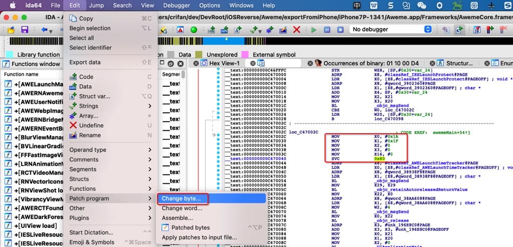

反调试
TODO：
- 【整理】iOS反越狱相关：反调试 反反调试
- 【已解决】iOS中正向调用ptrace的PT_DENY_ATTACH防止调试
- 【已解决】iOS中的caddr_t类型的定义
- 【已解决】debugserver启动iOS的app抖音报错：Segmentation fault 11
- 【已解决】抖音反反调试：把二进制AwemeCore的svc 0x80指令替换成nop指令
- 【已解决】Mac中用IDA实现抖音二进制AwemeCore的svc 0x80替换成nop指令
iOS安全防护技术之一是
反调试- 防止你的iOS的app被别人逆向调试
- 加了反调试后的效果
- 现象：别人用调试工具去调试你的iOS的app，会报错退出，从而无法继续调试
- 举例
debugserver会报错：Segmentation fault 11
- 举例
- 现象：别人用调试工具去调试你的iOS的app，会报错退出，从而无法继续调试
- 反调试实现手段
- ptrace的PT_DENY_ATTACH
- ptrace() = ptrace + PT_DENY_ATTACH
- syscall() = syscall + ptrace + PT_DENY_ATTACH
- inline asm=内联（ARM）汇编 = svc 0x80 + ptrace + PT_DENY_ATTACH
- sysctl的getpid
- 其他
- SIGSTOP
- task_get_exception_ports
- isatty
- ioctl
- ptrace的PT_DENY_ATTACH
- 详见子教程
ptrace的PT_DENY_ATTACH
ptrace + PT_DENY_ATTACH
ptrace(PT_DENY_ATTACH, 0, 0, 0);
具体代码：
- main.m
#import <UIKit/UIKit.h>
#import "AppDelegate.h"
#import "CrifanLib.h"
int main(int argc, char * argv[]) {
// anti-debug
iOS_antiDebug_ptrace();
NSString * appDelegateClassName;
@autoreleasepool {
// Setup code that might create autoreleased objects goes here.
appDelegateClassName = NSStringFromClass([AppDelegate class]);
}
return UIApplicationMain(argc, argv, nil, appDelegateClassName);
}
- CrifanLib.h
void iOS_antiDebug_ptrace(void);
/*==============================================================================
iOS Anti-Debug
==============================================================================*/
typedef int (*func_ptrace)(int request, pid_t pid, caddr_t addr, int data);
#if !defined(PT_DENY_ATTACH)
#define PT_DENY_ATTACH 31
#endif // !defined(PT_DENY_ATTACH)
void iOS_antiDebug_ptrace(void) {
// ptrace(PT_DENY_ATTACH, 0, 0, 0);
// void* libHandle = dlopen(0, RTLD_GLOBAL | RTLD_NOW);
// // libHandle void * 0xfffffffffffffffe
// if (NULL == libHandle) {
// char* errStr = dlerror();
// printf("Failed to open 0, error: %s", errStr);
// } else {
// func_ptrace ptrace_ptr = dlsym(libHandle, "ptrace");
// if (NULL != ptrace_ptr){
// ptrace_ptr(PT_DENY_ATTACH, 0, 0, 0);
// }
// dlclose(libHandle);
// }
func_ptrace ptrace_ptr = dlsym(RTLD_SELF, "ptrace");
// ptrace_ptr func_ptrace (libsystem_kernel.dylib`__ptrace) 0x000000018cee2df8
if (NULL != ptrace_ptr){
// ptrace_ptr(PT_DENY_ATTACH, 0, 0, 0);
ptrace_ptr(PT_DENY_ATTACH, 0, NULL, 0);
}
}
syscall + ptrace + PT_DENY_ATTACH
syscall(SYS_ptrace, PT_DENY_ATTACH, 0, NULL, 0);
svc 0x80 + ptrace + PT_DENY_ATTACH
- inline asm=内联（ARM）汇编 = svc 0x80 + ptrace + PT_DENY_ATTACH
- 具体实现：
mov x0, #26 // ptrace = 0x1A mov x1, #31 // PT_DENY_ATTACH = 0x1F mov x2, #0 mov x3, #0 mov x16, #0 svc #0x80 - 效果：编译后的iOS的app的二进制中，加了反调试的汇编代码逻辑
- 举例
- 抖音
- 
- 抖音
- 举例
- 具体实现：
sysctl的getpid
实现代码：
int name[4]; //里面放字节码。查询的信息
name[0] = CTL_KERN; //内核查询
name[1] = KERN_PROC; //查询进程
name[2] = KERN_PROC_PID; //传递的参数是进程的ID
name[3] = getpid(); //获取当前进程ID
size_t infoSize = sizeof(struct kinfo_proc);
struct kinfo_proc kernelInfoProc; //接受查询结果的结构体
memset(&kernelInfoProc, 0, infoSize);
sysctl(name, 4, &kernelInfoProc, &infoSize, NULL, 0);